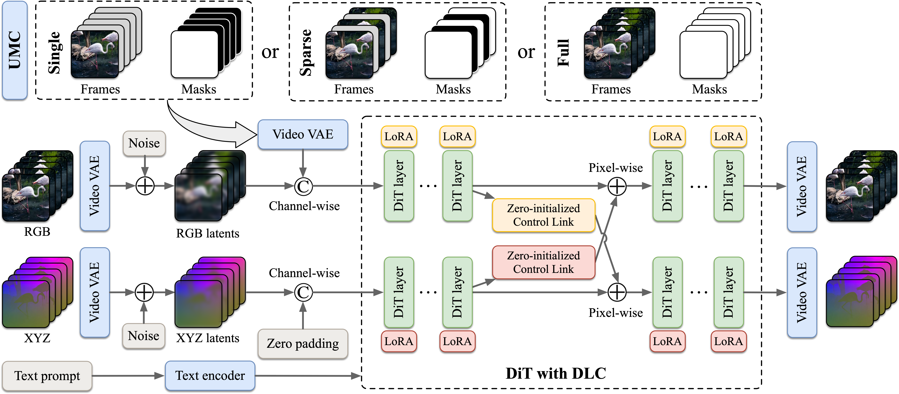

Methodology

Figure 1: The One4D Unified Framework architecture.
🎛️
Unified Masked Conditioning
Enables seamlessly transition between 4D generation from a single image, 4D reconstruction from a full video, and mixed generation and reconstruction from sparse frames using a single unified model.
🧩
Decoupled LoRA Control
Decouples RGB and XYZ computation to minimize interference while maintaining pixel-wise cross-modal control.

Figure 2: Comparison of Decoupled LoRA Control against other architectures.